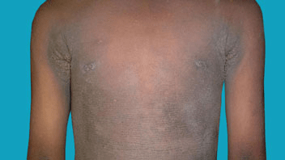
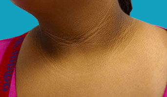

Acanthosis nigricans is usually the result of obesity. This is known as
obesity-associated acanthosis nigricans.
It occurs because obesity can cause insulin resistance (when the body is unable
to properly use the hormone insulin), which may lead to high levels of insulin in
the blood, affecting the skin cells.
Insulin resistance can also cause type 2 diabetes, so acanthosis nigricans can be
an early sign that you have diabetes or are at risk of developing the condition
Acanthosis nigricans is sometimes associated with an underlying syndrome or hormone problem, such as:
Acanthosis nigricans is sometimes triggered by medicines, including insulin, corticosteroids, and hormone treatments such as human growth hormone or the contraceptive pill. This is known as drug-induced or medication-associated acanthosis nigricans.
In rare cases, acanthosis nigricans can be caused by a faulty gene inherited
directly from your parents. This is known as familial or benign genetic
acanthosis nigricans.
This type is usually passed on in an autosomal dominant pattern, which means
it can be passed on if only one of your parents carries the faulty gene.
If the dark skin patches come on suddenly and spread quickly, it may be a sign you have cancer (usually stomach cancer). This is known as malignant acanthosis nigricans. This is a rare condition that tends to affect middle-aged or elderly people, regardless of their weight or ethnic background. The patches are more severe and the mouth, tongue and lips may also be affected. The skin may also become irritated and itchy.
If you have acanthosis nigricans, you'll have thickened, brownish-grey or
black patches of skin.
The patches will be dry and rough, feeling similar to velvet. They may also be itchy.
These patches may occur anywhere, but are usually seen around the neck, in the
armpit, around the groin and sometimes in other skin folds. Occasionally, the
skin over the joints of the fingers and toes may be affected, as well as the
lips, palms of the hands and soles of the feet.
The patches usually develop slowly over time. Patches that grow and spread quickly
are more likely to be associated with cancer. In these cases, the mouth, tongue,
throat, nose and windpipe may also be affected.
You may also have lots of tiny finger-like growths from the patches. This is
known as papillomatosis.
There may also be skin tags around the affected area. These are small flesh-coloured
or pigmented growths that hang off the skin and look a bit like warts.